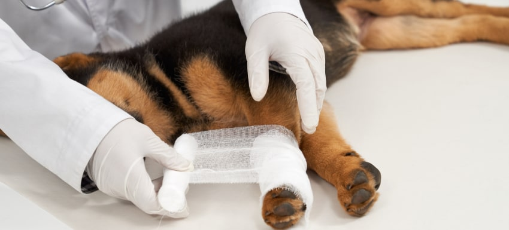

Mi perro tiene una herida en carne viva ¿cómo proceder?
Cuando te das cuenta de que tu perro tiene una herida en carne viva, especialmente una profunda, es completamente normal que te asustes. Las lesiones graves requieren una atención inmediata, pero saber cómo actuar en estos casos puede marcar la diferencia entre una recuperación rápida o complicaciones. Afortunadamente, con los cuidados adecuados, puedes ayudar a tu perro a sanar de manera segura y eficaz. Aquí te explico cómo proceder paso a paso, para que puedas actuar con confianza y tranquilidad.
Pasos a seguir si tu perro tiene una herida abierta
-
Evaluar la herida: ¿Qué tipo de herida tiene tu perro?
Lo primero que tienes que hacer es valorar la gravedad de la herida. Si la herida es tan profunda que se ve tejido expuesto (como piel, músculo o incluso hueso), es una herida grave. Debes actuar rápidamente para evitar infecciones o que el problema empeore. Si la herida es más superficial, puede que solo requiera limpieza y cuidados básicos, pero en una herida en carne viva, lo mejor es tomar medidas con rapidez.
- Cortes accidentales con objetos afilados.
- Mordeduras de otros animales.
- Traumáticos o caídas que afectan a las capas más profundas de la piel.
-
Controlar el sangrado
- Presiona sobre la herida: Usa una gasa estéril o un pa帽o limpio y aplica presión directa para detener el sangrado. Mantén la presión durante varios minutos sin soltar, hasta que veas que el sangrado disminuye.
- Levanta la zona afectada: Si la herida está en una pata o una extremidad, trata de elevarla un poco para reducir el flujo sanguíneo hacia la zona lesionada.
- Evita retirar el vendaje: Si la gasa o tela se empapan de sangre, no la retires. Mejor coloca una nueva capa encima y sigue aplicando presión.
-
Limpiar la herida
- Usa agua tibia: Lava la herida con agua tibia, sin jabón ni detergentes fuertes.
- Antiséptico suave: Si tienes disponible un antiséptico como la povidona yodada o la clorhexidina, úsalo para limpiar la zona.
- No apliques alcohol o peróxido de hidrógeno, ya que pueden da帽ar los tejidos y retrasar la cicatrización.
-
Cubrir la herida
- Usa un vendaje estéril: Cubre la herida con una venda o apósito estéril para mantenerla limpia y protegida.
- Prevenir lamidos: Coloca un collar isabelino para evitar que tu perro se lama la herida.
- Reemplaza el vendaje regularmente: Cada día revisa y cambia el vendaje si se ensucia o moja.
-
Monitorear signos de infección
Observa enrojecimiento, hinchazón, secreción de pus, fiebre o decaimiento. Si notas alguno, lleva a tu perro al veterinario cuanto antes.
-
Consultar al veterinario
Las heridas profundas requieren revisión profesional para suturar, recetar antibióticos o descartar fracturas.
-
Prevención para el futuro
- Supervisa su entorno para evitar objetos peligrosos.
- Mantén sus u帽as cortas para reducir riesgos de enganches.
- Vigila interacciones con otros animales para prevenir mordeduras.
- Revisa su piel frecuentemente al ba帽ar o cepillar.